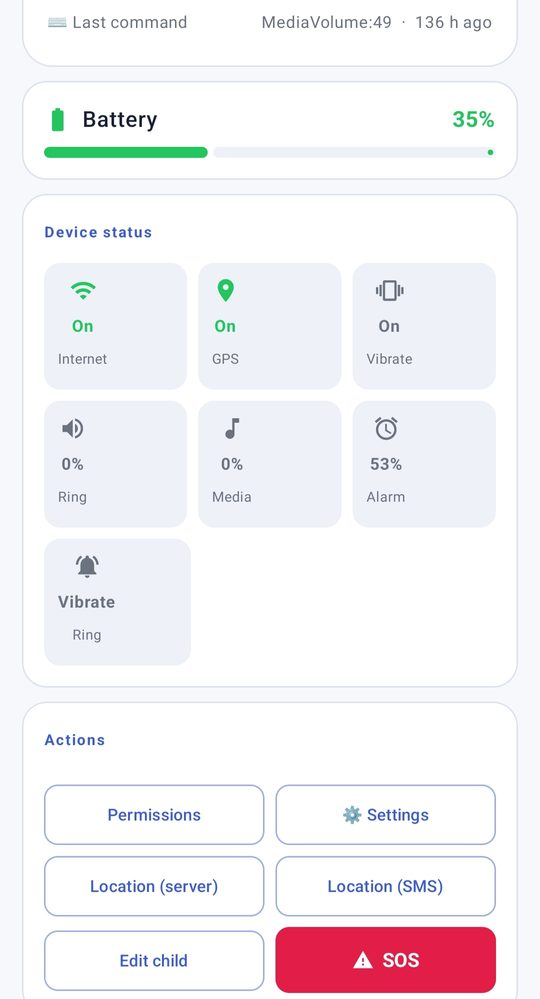
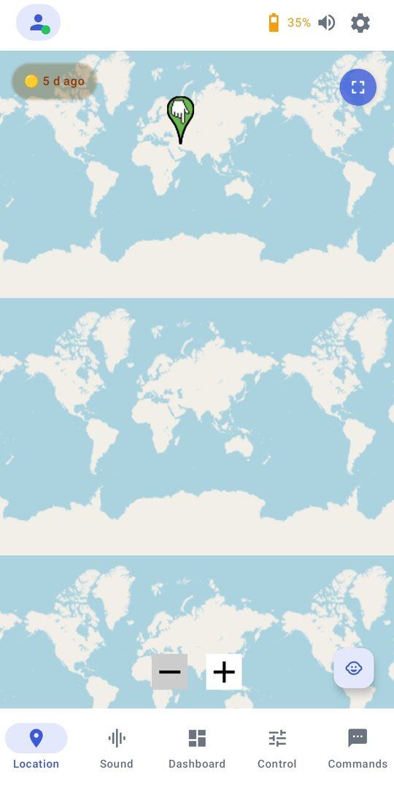
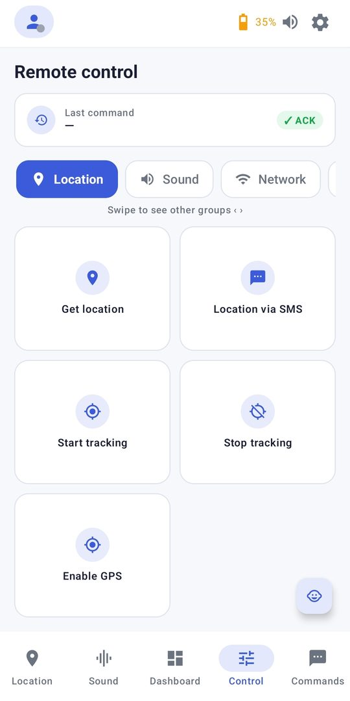
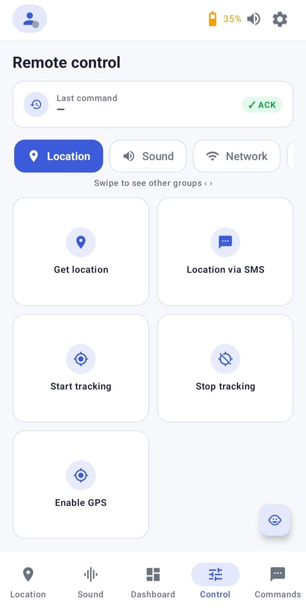

Vedetor is a transparent monitoring app for parents, organizations and managers.


Not a hidden spy tool.
No technical knowledge needed.
No mockups.


| Vedetor | Typical apps | |
|---|---|---|
| Works without internet (SMS fallback) | ✓ | Rarely |
| Full remote control (lock, wipe, sound) | ✓ | ✕ |
| Transparent to the monitored device | ✓ | ✕ |
| Local/domestic infrastructure option | ✓ | ✕ |